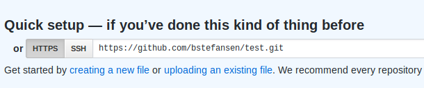

Git is an open source distributed version control system (DVCS). In simpler terms, it is an application that allows developers to mirror software on multiple computers and track changes. This technology allows multiple developers to collaborate on software over the internet without having the need for a centralized backup.
To get started, begin by dowloading Git on their website. If you are using a linux distribution, use the commands below
$ sudo apt-get update
$ sudo apt-get install git
Once you have downloaded Git onto your computer, you will want to create a GitHub account here. Once your account is created, create a new repository on your account. Take note of the remote link on the repository page.
When you have a GitHub account and new repository created, you can follow the steps and commands listed below.
// Config your GitHub account
$ git config -global user.name "[name]"
$ git config -global user.email "[email address]"
//Initialize local repo
$ git cd "[filepath to your folder]"
//Add remote repo
$ git remote add origin "[remote repo URL]"
Now that you have your machine configured, you are ready to start coding! Once you are ready to upload your changes to Github, you will commit your changes to your local repository.
To begin, you will need to make sure your terminal is working within the correct filepath. Now follow the steps and commands listed below.
//Stage your files ("." adds all of the changed files)
$ git add .
//Record files to local repo
$ git commit -m "[create a message describing your changes]"
Once you have committed your changes to your local repository, you now need to upload your changes to your remote repository.
Now follow the steps and commands listed below.
//Push files (For this demo, we will push to master branch)
$ git push -u origin master
//Use this command after your first initial push
$ git push
Congratulations! You have uploaded files to a remote repository! We will now discuss the pull command. If you work on different machines or have multiple people working on the same repository, you can use the "pull" command to update your local repository with any changes in the remote repository.
To update your repository with any changes, follow the steps and commands listed below.
//Updates local repo with remote repo changes
$ git pull